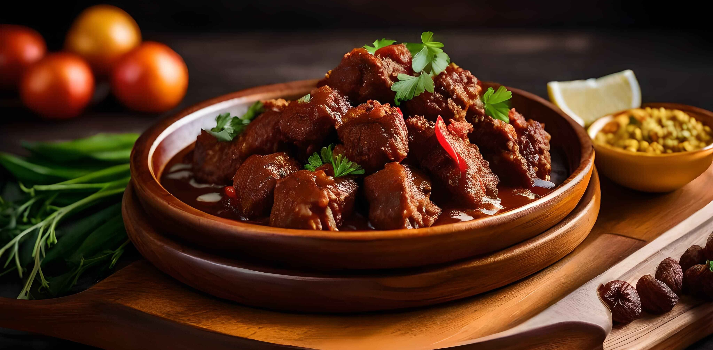

Rendang
Anzahl der Portionen:
Wählen Sie bitte eine Anzahl zwischen 1 - 20 aus!
- 150 g Gulasch (Rind)
- 0.25 große Zwiebel(n), fein gehackt
- 0.5 Knoblauchzehe(n), fein gehackt
- 0.25 TL Sambal Oelek
- 0.25 TL Galgant, gemahlen oder 4 Scheiben frisch
- 0.25 Stücke Ingwer, walnußgroß, fein gerieben
- 0.125 TL Kurkuma (Kunjit), gemahlen
- Salz
- Öl, geschmacksneutrales (Rapsöl oder Sonneblumenöl)
- 100 ml Kokosmilch, evtl. bei Bedarf auch mehr
- 0.25 Stängel Zitronengras
- 0.5 Lorbeerblätter (Daun Salam), indonesische
- 1 Kaffir-Limettenblätter (Daun djeruk purut), frisch oder getrocknet
- Sojasauce, süße (Ketjap manis)
- Wasser
Zubereitung
Das Rindfleisch sollte etwas kleiner gewürfelt werden, als für unser Gulasch üblich (ca. 2-3 cm). Das Fleisch knapp mit Wasser bedeckt kochen. Knoblauch, Zwiebel, Ingwer, Galgant, Salz, Kurkuma und Sambal Oelek in einem
Steinmörser (Oelek) fein zerreiben und in etwas Öl anrösten.Mit der Kochbrühe des Fleischs ablöschen, Kokosmilch zugeben, die Blätter und das Zitronengras zugeben. Alles aufkochen und das Fleisch hineingeben.Nun muss das Fleisch
unter häufigem Rühren so lange bei mäßiger Hitze durchkochen, bis die Sauce dick cremig geworden ist. Mit Ketjap manis abschmecken. Keinen Deckel auflegen,das Gericht soll leise köcheln. Etwa 1 bis 1,5 Stunden dafür einplanen.
Heiß servieren.
Tipp: Wer mag, kann auch noch weitere Gewürze wie Kreuzkümmel, Koriander oder Zimt zugeben. Diese werden dann zusammen mit der zerriebenen Paste im Öl angebraten.
Hinweis: Rendang ist fast immer Bestandteil der indonesischen Reistafel, aber auch eigenständiges Gericht. Es kann sehr gut vorgekocht werden, hält sich einige Tage im Kühlschrank und eignet sich auch gut zum
Einfrieren.
Rezept erstellt von
Arnesto